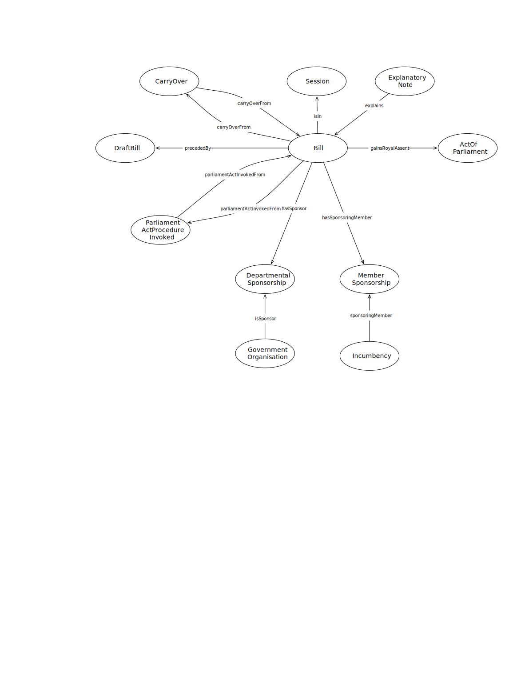

IRI: http://parliament.uk/ontologies/bill/ActOfParliament
IRI: http://parliament.uk/ontologies/bill/BillExpression
IRI: http://parliament.uk/ontologies/bill/BillWork
IRI: http://parliament.uk/ontologies/bill/DepartmentalSponsorship
IRI: http://parliament.uk/ontologies/bill/DraftBill
IRI: http://parliament.uk/ontologies/bill/House
IRI: http://parliament.uk/ontologies/bill/HybridBillWork
IRI: http://parliament.uk/ontologies/bill/Incumbency
IRI: http://parliament.uk/ontologies/bill/MemberSponsorship
IRI: http://parliament.uk/ontologies/bill/MinisterialDepartment
IRI: http://parliament.uk/ontologies/bill/PaperExpression
IRI: http://parliament.uk/ontologies/bill/PaperWork
IRI: http://parliament.uk/ontologies/bill/ParliamentActProcedureInvocation
IRI: http://parliament.uk/ontologies/bill/PrivateBillWork
IRI: http://parliament.uk/ontologies/bill/PublicBillWork
IRI: http://parliament.uk/ontologies/bill/departmentalSponsorshipOfPublicBill
IRI: http://parliament.uk/ontologies/bill/enactedAs
IRI: http://parliament.uk/ontologies/bill/expressionOf
IRI: http://parliament.uk/ontologies/bill/inHouse
IRI: http://parliament.uk/ontologies/bill/memberSponsorshipOfPublicBill
IRI: http://parliament.uk/ontologies/bill/parliamentActInvokedFrom
IRI: http://parliament.uk/ontologies/bill/parliamentActInvokedTo
IRI: http://parliament.uk/ontologies/bill/precededBy
IRI: http://parliament.uk/ontologies/bill/sponsorshipByGovernmentDepartment
IRI: http://parliament.uk/ontologies/bill/sponsorshipByIncumbency
IRI: http://parliament.uk/ontologies/bill/longTitle
This HTML document was obtained by processing the OWL ontology source code through LODE, Live OWL Documentation Environment, developed by Silvio Peroni.